《鏢人》最震撼我的一段劇情，是刀馬與諦聽玉門關上的宿命對決。一路追著刀馬的諦聽，直到瀕死才發現「停下來，才能得到答案」。跟大家聊一段沒出現在電影，卻在原著最吸引我的「禪學」。
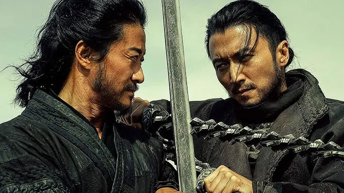
放下無窮盡的懺悔 悟道在於選擇
很多人看不懂原著，為何戰力天花板的「諦聽」，從一登場便開始無盡的「懺悔」。更多人看不懂最後這場生死對決，為何用斷臂從地獄換來了戰力爆發後，面對動彈不得的刀馬，竟選擇放下銅鞭，跪地成佛。
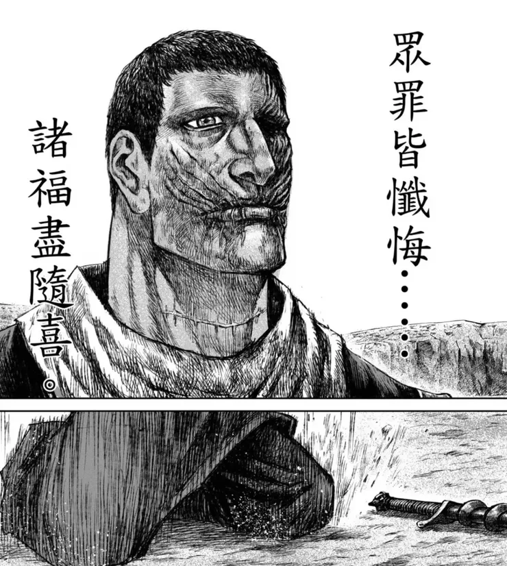
其實從這場打鬥，可以感受作者的精心設計，他以「諦聽」錯演劇本的一生起頭，終於悟出因果落幕，以「諦聽」之死，換得「阿相」重生的輪迴。
重看後也終於看懂，諦聽是選擇不再執著勝利後的虛妄，終於頓悟師父想給他的「佛法」看懂因果，在另一個平行宇宙裡，放下一身銅筋鐵骨，找回自我。
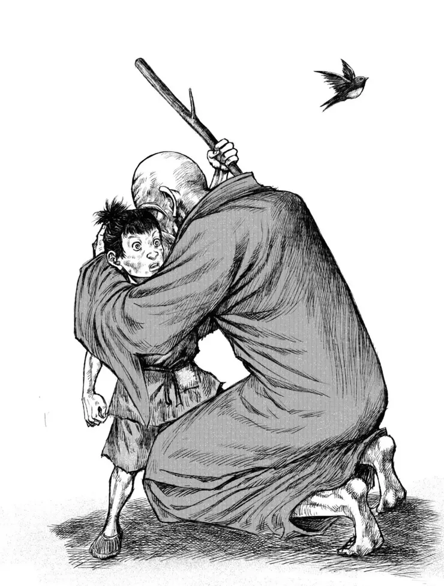
放下銅筋鐵骨的阿相，背影與當初的信行疊合
頓悟的點是小七，而生求死之心
兵戎之下無眾生，兩人一直對打，兩敗俱傷，直到刀馬再無反抗之力。諦聽舉鐧欲殺，刀馬一路帶着的小孩小七，跑到兩人之間，嘗試攔着。諦聽一看，心一沉，憶起前事。
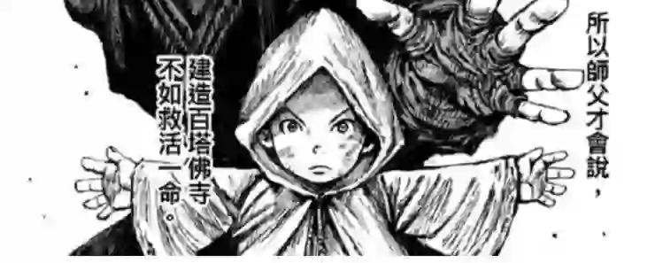
因為真佛不在泥像之中，而是在眾生之中。
執念的起：為生存入佛門 為報師恩而還俗
阿相的童年，從被拋棄開始。阿相這個看似充滿佛緣禪意的名字，只是不識字的父母，只知道相州，就取名阿相。然而他一生的迷惘，也被作者拿來敘述亂世之下，眾生對信仰的依賴，卻又不理解的隱喻。
法藏寺外，因戰亂無法維持生計的母親，忍痛將阿相丟棄在寺廟前。正被頑童嘲笑、毆打，這時同樣瘦弱的信行禪師為他擋下毆打，並且收養了他。
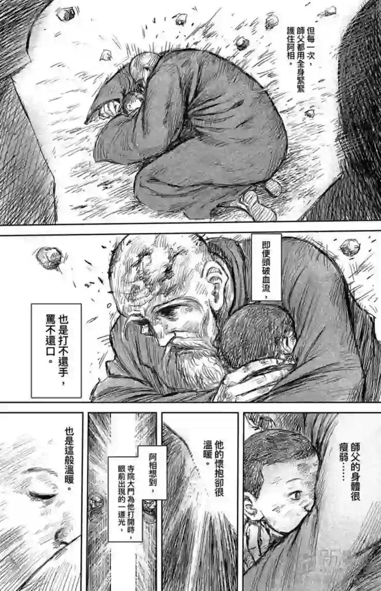
教他觀心與練武互為表裡，為將精神與肉體磨練到極致，一切佛像只是泥龕，不需要拜。但眾生不理解，常惡言相向、拳腳相加，想起拋棄自己的母親，阿相看不到善，所以內心根本不信佛。
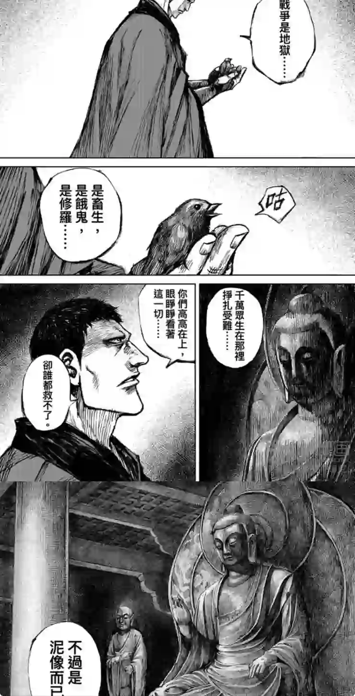
阿相不信佛，卻讓師父活成了他心目中的泥像
轉眼阿相已成年，隋朝開國大臣高熲身披紫袍，帶著幾名貼身侍衛，邀請信行禪師入京說法，前提是選拔僧團為國效力，只要僧團為天子立功，便讓三階教進京開宗立派。
信行卻以「殺生乃十惡業之首，佛門弟子不可為之」回絕，堅持「殺業只能換來殺業，換不來功果」、「建造七級浮屠，不如救回一命。」
然而躲在門外的阿相並不真心熱愛佛法，只是一心想讓師父的教法得到朝廷承認。因此便決定由自己一人的戰功抵百人，希望高熲信守承諾，助三階教發揚光大。次日，阿相不顧師兄弟斥責，向師父提出還俗的請求。師父失落卻平靜的說：「那麼，便作隨喜」。
阿相屢立戰功，成為朝廷最鋒利的左驍騎衛，隨著左驍騎衛滅陳有功，信行禪師也受召進京為天下祈福。看到阿相後，師父深知背後的殺業如此之重，想帶阿相一起回家，卻因太子的受戒儀式而被強留於京城。
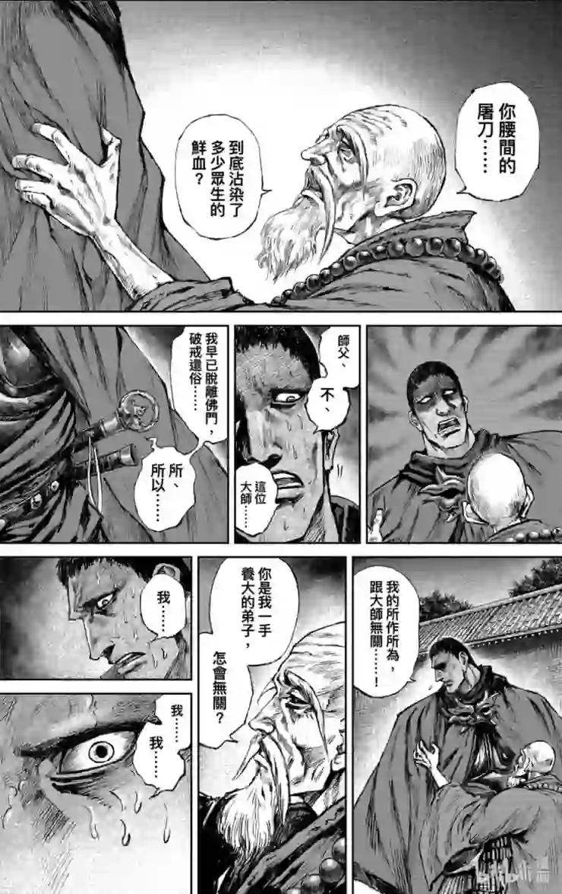
入京後師父每日背負著阿相的殺業，想回家卻不可得
「今日是三階教，明日也許是其他宗教，始終皆是為朝廷所用⋯。」最終師父等不到太子的受戒儀式便鬱鬱而終。不久後，失去朝廷庇護的三階教被打壓成邪教，成為阿相一生無法掙脫的枷鎖。
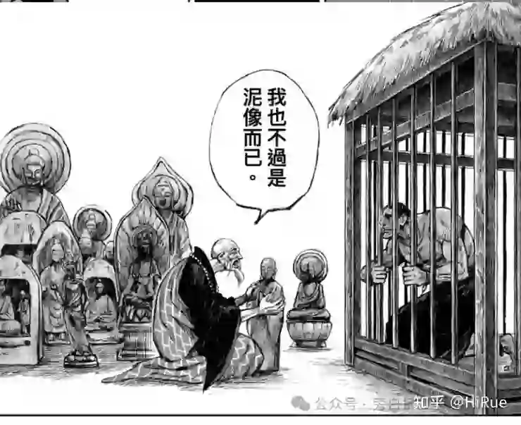
諦聽是辨別真偽的神獸，卻不懂師父弘揚佛法的本意
執念的承：雛鳥阿相已死 諦聽用殺戮懺悔
回首初上戰場時的阿相，腦海一片空白，感到生命的脆弱與面對死亡時的平等。甚至連想默念一句經文都想不起，戰場上，他只有一個念頭「活下去」。
身處末世之中，他開始學著什麼看不到、什麼都聽不見，只有取下對方首級，建功立業。既然世間已是地獄，眾生根基不夠，那麼唯有超度，方可成佛。作者巧妙的使用一隻雛鳥，隱喻專注在追求目標時，刻意拋棄的自我認同。
- 相遇：尚未獲諦聽稱號的阿相，在戰爭裡偶然撿到了隻掉隊的雨燕雛鳥。阿相發現鳥兒沒受重傷，只是翅膀太軟飛不起來。
- 命名：當時「刀馬」看出他想養這隻鳥，便建議幫鳥取個名字，阿相笑著說「等我們活著回去再說吧」。後隨著戰功彪炳，晉王楊廣賜號「諦聽」，或許此時尚存初心，便命名雛鳥「阿相」。
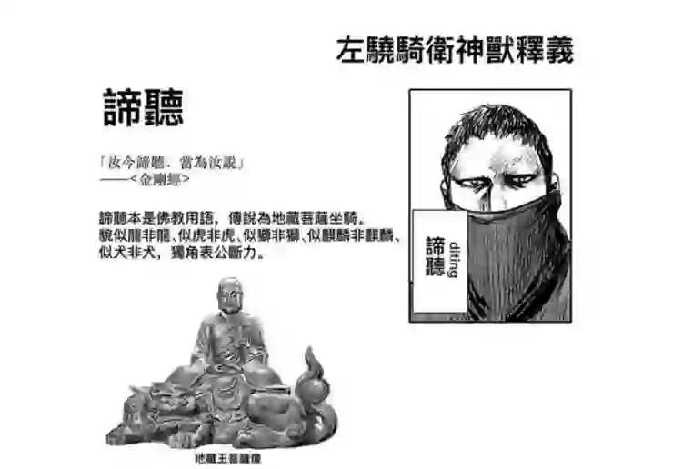
諦聽為三階教唯一敬拜之地藏王菩薩的座騎
- 隱喻：被命名為「阿相」的雛鳥，就是諦聽自己原本想走的路—但身在亂世，為了師父、為了信仰、為了生存，不斷在殺戮與本心之間迷失自我，只能不斷懺悔。所以諦聽看到阿相生病了。
- 最後雛鳥阿相死去，象徵著「諦聽」認清無法扭轉三階教邪教的命運，唯一方法，只能選擇利益交換，期盼用戰功，乞求皇權收回成命的悲劇宿命。
執念的轉：斷臂後穿過地獄見達摩
畫面拉回戰場，一個閃神，諦聽的單臂和融掉佛像的銅鞭一起掉在地上。這對看似呼應教義的銅鞭，始終不是為眾生揮舞。諦聽不願放下的，是以審判世間的罪孽為名，實則是與絕對權力者的利益交換，是那個以「我執」合理化曲解教義、曲解懺悔的道路。
刀馬砍掉的不是諦聽的單臂，而是諦聽握了一輩子都不肯放下的東西。刀馬：「做正確的事太難了，所以我們各自都失去了最珍貴的東西。」
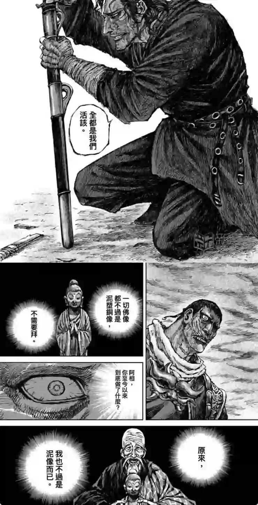
刀馬的話刺中諦聽的心，更甚斷臂的痛楚，諦聽進入八大地獄幻境，卻因為我執，不僅無視大叫喚地獄反映的殺業，穿過焦熱地獄和大焦熱地獄的冤魂，在無間地獄感受痛苦，也不肯接下洗滌罪孽的水。
持續的殺戮，諦聽把面目哭成了醜陋的惡鬼，卻找不到懺悔的最終執念。直到他看到了輪迴，看到大千世界。最後來到了菩提樹下，見到了心中的真佛達摩。
達摩問：「你為何來？」諦聽說：「求法。」達摩說：「回去吧，你得不到的。因為你放不下手上的東西。」諦聽自斷一臂：「我已放下。」達摩便試。
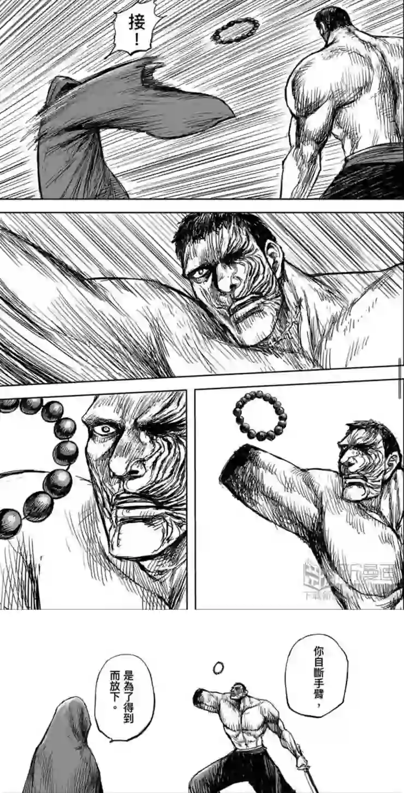
諦聽伸手想接，才被點出「你的執著還在，因此以為自己的手臂還在。」「如果放下，是為了得到，結果你什麼也沒有得到。」
有別於慧能對達摩斷臂而悟道，諦聽在失去一隻手臂後，沒有放下，而是為了得到。於是地獄變之後，諦聽發現自己什麼都沒有得到，那便不曾失去。因而走上「既然不曾失去，便無需懺悔。」的修羅之道。
執念的合：因果輪迴 因眾生而悟道
於是諦聽回過神來，憑藉地獄變的修羅之道，一連串凌厲的攻勢，刀馬無法招架。而有了開頭的那一段。
刀馬諦聽反目的原因，是當初左驍騎衛滅門密令下，刀馬救下襁褓之中的小七。而不顧生死擋在刀馬前面的小七，讓諦聽想起了師父說的因果。
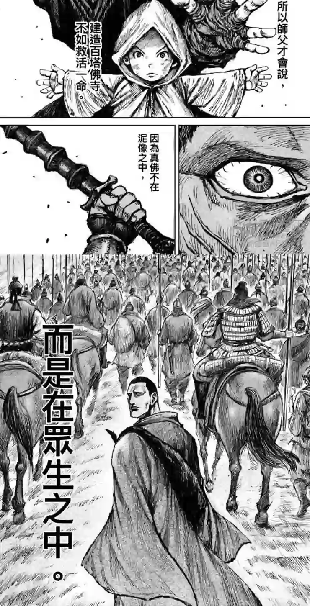
想到了初上戰場的自己…
其實，我們一直都有選擇。
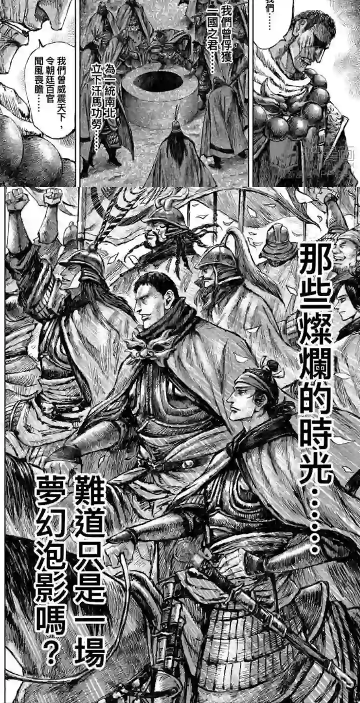
如夢幻泡影 如露亦如電 應作如是觀
如果在另一個平行宇宙裡，阿相選擇的不是建功立業，而是離開戰場…
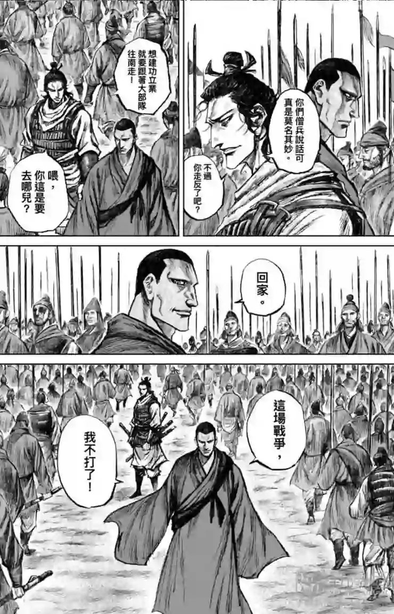
如果在太子府滅門密令時，選擇放走刀馬…
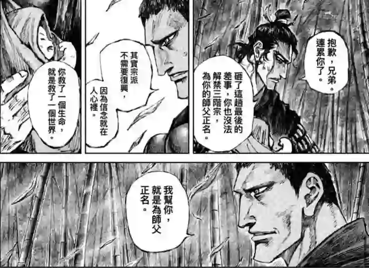
諦聽第一次理解到，禮佛懺悔不是為了得到佛祖的諒解，也不是為了欺騙自我，尋求安心，是為了帶著他們的痛苦，繼續走下去。
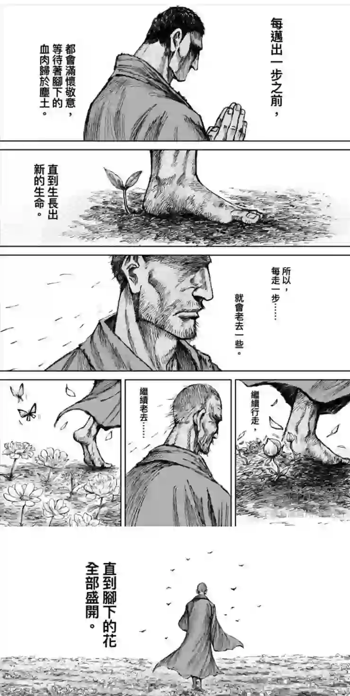
直到終於看到了要回去的地方時，你已經很老了。
已經瘦弱的你，救下同樣遭遇的小孩…
諦聽終於得到了，阿相在另一個平行宇宙裡的結局。
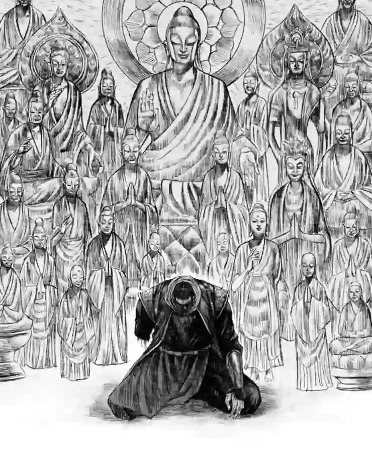
放下銅鞭 跪地成佛—「三階之相」
寫到最後發現作者實在太厲害，文字描述實在無法呈現，用了很多原圖，也難怪需要以漫畫方式呈現。
篇幅有點長，只希望沒有看過原作的你，也能看懂。